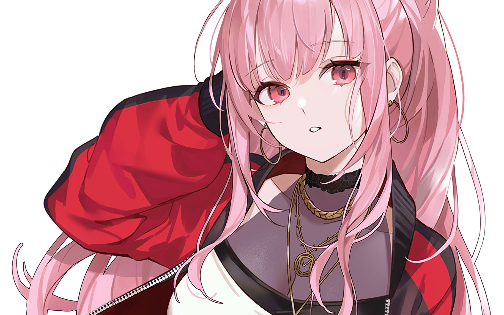
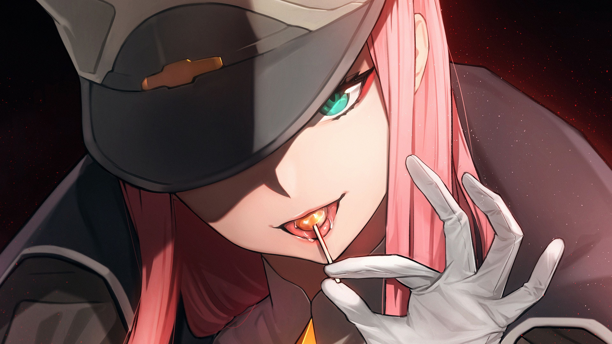
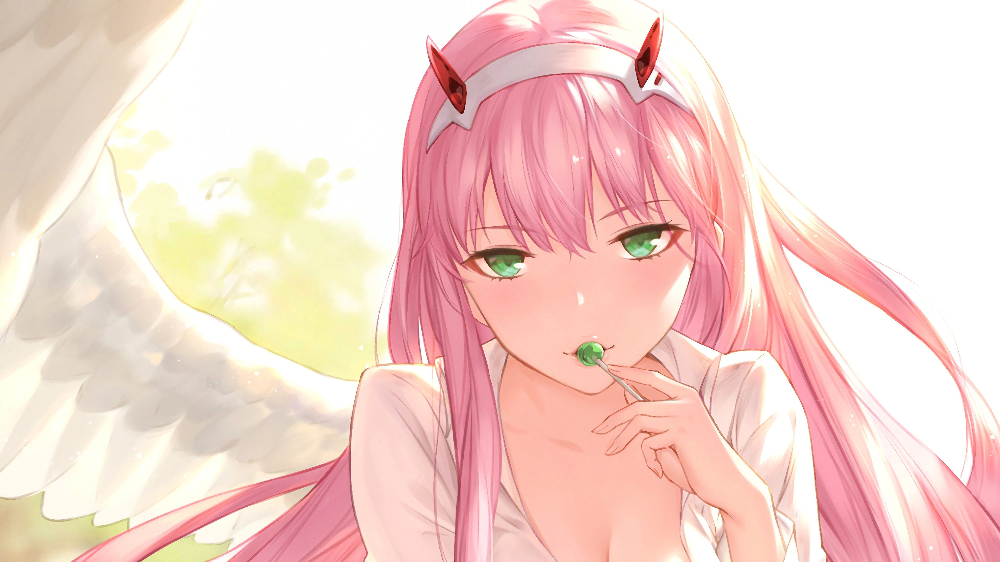
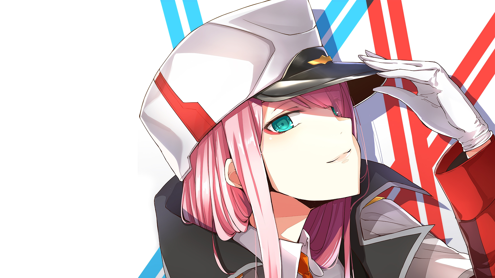
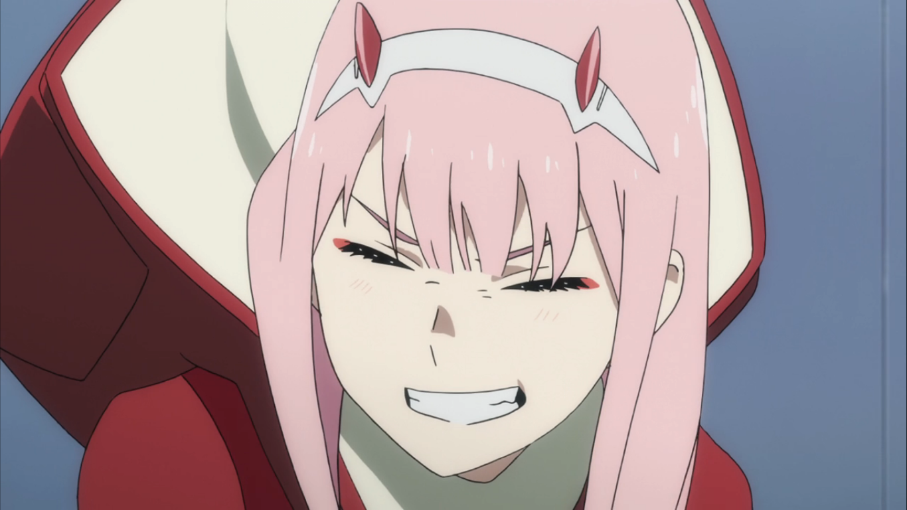
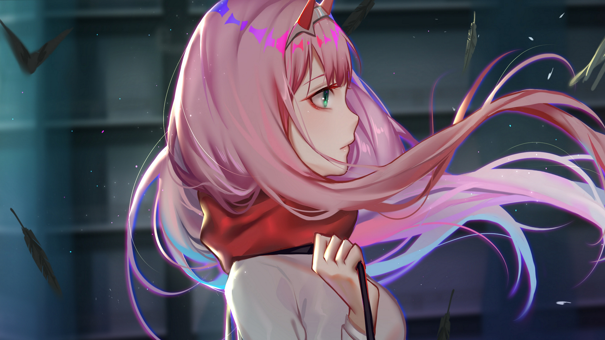
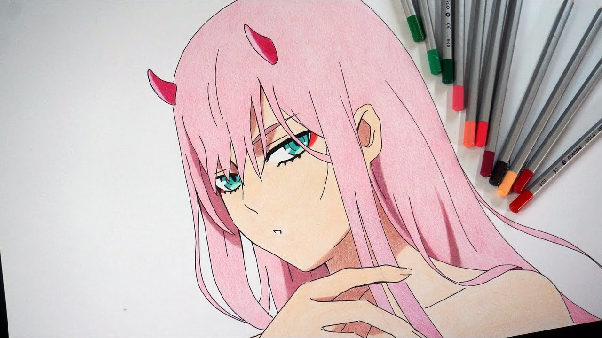

A aparência de Zero two
Crescendo, Zero Two desenvolveu uma pele clara. Ela tinha uma figura esbelta e atlética; ela era a garota mais alta do esquadrão e ainda mais alta que a maioria dos meninos também. Ela tinha longos cabelos rosa na altura da cintura com franja reta cobrindo a testa e um par de chifres vermelhos na cabeça e uma faixa de cabeça branca sobre os chifres. Ela tinha olhos turquesa afiados com anéis ao redor das pupilas e marcas vermelho-rosadas no canthi.
O conjunto completo de Zero Two era composto por um boné militar branco com sobretudo e botas combinando. Ela era frequentemente vista vestindo seu uniforme militar vermelho, leggings pretas e botas brancas. Zero Two originalmente usava o traje de pistilo do 9 : um macacão vermelho com detalhes em branco. Depois de ser designada para o Esquadrão 13, ela adotou o uniforme Pistil padrão do esquadrão: uma roupa branca com detalhes em vermelho.
Como efeitos colaterais de montar agressivamente Strelizia , as presas e chifres de Zero Two podem crescer a um ritmo alarmante. Seus olhos brilham vermelhos quando estão com raiva, mesmo usando sua faixa de cabeça limitadora. Uma vez chegou ao ponto em que seu rosto estava mortalmente pálido e seus olhos vermelhos de sangue. Seus chifres também podem se ramificar a ponto de tocar o teto, e sua cor de pele também pode voltar à sua cor vermelha original. No episódio 17 , Zero Two recebeu uma faixa de flores de Miku , que foi usada pelo resto do episódio. No episódio 21 , Zero Two remove seu limitador para salvar Hiro , o que faz com que sua pele fique vermelha semelhante a ela quando criança, e seus chifres cresçam e se estiquem pela sala de forma semelhante a galhos de árvores.
Zero Dois - Strelizia True Apus.
No episódio 23 , Zero Two se fundiu com seu FRANXX e se transformou na forma True Apus de Strelizia . Nesta forma, seu rosto foi substituído pelo rosto de Zero Two, no qual ela apareceu com lábios mais pronunciados e cor de lábios rosados. Ela tinha um capacete branco com linhas vermelhas com uma arma azul parecida com um chifre em cima. Havia também um véu de luz atrás do elmo de Apus. As pernas de Strelizia True Apus mudaram para uma aparência de um vestido branco, sem ombros e sem costas com detalhes em verde. Em um dos quadrinhos MATO, Strelizia True Apus é considerado o vestido de noiva de Zero Two.
Personalidade
Desde a infância, Zero Two estava sozinha devido ao seu sangue Klaxosaur, sempre sendo vista como um "monstro". A forma como as pessoas a tratavam quando criança a fez perder a fé nas pessoas, o que é especialmente visto quando ela era criança: ser muito defensiva ou agressiva quando as pessoas tentavam interagir com ela. Além disso, Zero Two agia como um animal selvagem ou uma criança selvagem, comendo com as mãos, rosnando, fazendo outros ruídos vocais em vez de falar e perseguindo ratos que estavam perto dela. No entanto, Zero Two também foi mostrado para uma garota bastante alegre, curiosa e feliz, e foi durante seu tempo com Hiro que moldou muito de sua personalidade e peculiaridades no presente, como seu guloso, a maneira como ela se referia a si mesma. como ("Boku"), e o apelido que ela tinha para Hiro, "Querido". Porque Hiro a tratou como qualquer outra pessoa, enquanto outros não a tratavam como humana por uma razão ou outra, Zero Two desenvolveu uma profunda admiração e gosto por ele. Apesar de ter suas memórias do querido de sua infância apagadas, Zero Two manteve algumas memórias fragmentadas e foi por isso que ela se esforçou para se tornar humana, não importa o quê.[1]
À medida que ela crescia, havia rumores de que a personalidade de Zero Two era perigosa, fria e sedutora. Ela era uma piloto de elite com o pseudônimo de "Partner Killer", dados os casos misteriosos de seus co-pilotos morrendo após apenas três missões FRANXX. No entanto, ela parecia ser brincalhona com Hiro e às vezes mostrava humor; o que é evidente durante o primeiro encontro, no qual ela o provocou e o chamou de "pervertido". No entanto, ela priorizou seu dever como parasita mais do que tudo, não porque ela queria proteger o papai .e os outros, mas porque queria "tornar-se humana". Sua visão da vida era bastante cínica e é por isso que ela não se incomodou com um nome, já que todos foram feitos para lutar e morrer. Ela também tinha sido um ativo militar valioso da APE e enviada para lutar na linha de frente por tanto tempo que não tinha consideração pela vida humana ou pela sua própria, já que todos se tornariam uma estatística quando morressem de qualquer maneira. Quando as pessoas ao seu redor morriam, ela mal ligava para isso porque, para ela, era apenas um fato da vida que todo mundo morre. Zero Two sempre manteve as pessoas à distância com humor zombeteiro, niilismo e distanciamento emocional. Zero Two também falou livremente sobre o quanto ela odiava sua sociedade. No entanto, depois de ver a determinação de Hiro em pilotar com ela, Zero Two notou que eles eram muito semelhantes e ela o convidou para fazer parceria com ela,[2]
A guloseima de Zero Two e a atitude presunçosa e rebelde.
Mais tarde, é visto que Zero Two era uma garota muito indisciplinada, apaixonada, temperamental, autoconfiante, presunçosa, assertiva e despreocupada que odiava seguir as regras estabelecidas pelos adultos. Ela era muito franca e honesta, e ao contrário dos outros Parasitas, ela não se importava com Papai e não tinha respeito por ele e pelos outros Sábios, apenas os vendo como pessoas que mentiram para ela durante toda a sua infância. Sua quebra de regras aparentemente despreocupada ajudou Hiro a sair de sua depressão incapacitante e adesão cega às regras, e o carinho alegre que ela mostrou a ele inspirou alguns dos outros parasitas do Esquadrão 13 a serem mais afetuosos uns com os outros. O comportamento de Zero Two também era bastante infantil, como evidenciado quando ela enxugou as mãos no rosto de Zorome.uniforme.
Zero Two também demonstrou agilidade impressionante, realizando cambalhotas e cambalhotas e aterrissando em pé todas as vezes. Durante a briga Girls vs Boy, Zero Two enganou as garotas para acreditar que ela iria cooperar com elas, após o que ela enganou os garotos para entrar nas garotas enquanto elas estavam tomando banho, então começou a roubar as roupas dos garotos e das garotas. . Enquanto era perseguida por Hiro, ela o provocava e ria enquanto corria pela casa. Ao fazer isso, ela se sentiu um pouco mais como uma humana.
[3] Enquanto um parasita excepcionalmente talentoso, Zero Two também tinha peculiaridades extremamente estranhas: comer com as mãos, muitas vezes lambendo pessoas, como ela mesma, embora ela não gostasse do sabor; Hiro, que tem gosto de perigo; Ichigo , que tem um gosto doce; e Ikuno, que tem gosto de segredo. Ela também muitas vezes refletiu sobre como ela queria ir para o oceano, molhando sua comida em mel e não tendo noção de espaço pessoal.
No entanto, logo depois, Zero Two ficou mais obcecado do que nunca para se tornar humano e se reunir com seu querido original. Ela se tornou mais melancólica e silenciosa, mal falando ou mostrando qualquer afeto por Hiro, apesar de seu comportamento em episódios anteriores. Quando Hiro pedia para ela falar com ele sobre seus problemas porque ele queria que eles se entendessem, Zero Two o rejeitou friamente e ela afirmou que eles poderiam se entender o suficiente pilotando Strelizia. Sua obsessão mais tarde fez com que ela se tornasse violenta em relação ao Esquadrão 13, incluindo Hiro, quanto mais ele tentava acalmá-la. Enquanto lutava contra Klaxosaurs, Zero Two agiu de forma imprudente, desconsiderando as ordens e planos de Ichigo, e ficando irritado com Hiro entrando em seu caminho.
Zero Two tornou-se muito mais agressivo tanto para Hiro quanto enquanto lutava contra Klaxosaurs, perseguindo os Klaxosaurs até que ela estivesse longe do grupo e, em seguida, esfaqueando repetidamente um cadáver de Klaxosaur que ela havia acabado de matar, dizendo enlouquecedoramente que ela mataria mais Klaxosaurs. Quando Zero Two começou a ficar um pouco obcecado em matar Klaxosaurs durante uma missão em que Hiro tentou controlá-la. ela iria matá-lo como tantos de seus outros co-pilotos no passado.
Zero Two questionando o conceito de "humanidade" depois de ser vilipendiado por não ser "humano" por Ichigo.
Zero Two também parecia se importar apenas com ela mesma, tanto que, mesmo quando Hiro estava morrendo, parecia que ela não podia se importar quando Ichigo exigia que ela pegasse leve com ele. Dito isto, ela tinha profundas inseguranças sobre não ser humana. Embora ela odeie quando outras pessoas trazem o fato de que ela não é humana e quando as pessoas a chamam de monstro, ela pode ser muito autodepreciativa sobre isso e até se chamar de um. Além disso, seu ódio por Klaxosaurs decorre do medo de se tornar um. Seu desejo de evitar isso, no entanto, a fez agir de forma mais monstruosa. Esse problema aumentou quando ela desenvolveu um ódio por espelhos, pois ela foi vista esmagando o espelho de mão que Hiro havia lhe dado em frustração, e começou a quebrar todos os espelhos da pensão.[
5]No entanto
No entanto, depois que ela percebeu que Hiro era de fato seu querido desde a infância, Zero Two sentiu-se extremamente apologético e perturbado por suas ações. Com Ichigo farto das travessuras de Zero Two, no entanto, ela forçosamente não permitiu que ela e Hiro visitassem. Ichigo até propôs a Nana que, a menos que Zero Two fosse expulso do Esquadrão 13, eles não cooperariam na próxima missão, para descrença e frustração de Zero Two. Mais tarde, Gorofinalmente conseguiu convencer Ichigo a deixar Zero Two visitar sua querida. No entanto, quando o esquadrão chegou ao quarto de hospital de Hiro, ele não estava lá. O súbito desaparecimento de Hiro enfureceu Zero Dois; ela se sentiu enganada e começou a espancar os membros do Esquadrão 13, principalmente Ichigo. Quando Hiro voltou e involuntariamente chamou Zero Two de "um monstro", Zero Two finalmente quebrou, levando à sua deportação. [6]Mais tarde, quando Hiro finalmente se reuniu com ela, Zero Two estava com medo de ser tocada e vista por ele, porque ela se considerava um monstro e não achava que merecia perdão depois do que havia feito.
No entanto, depois que Hiro a perdoou totalmente, pediu desculpas por chamá-la de monstro e prometeu a ela que falariam sobre seus problemas e sempre estariam juntos, eles confessaram seu amor um pelo outro e se tornaram um casal oficial. Após este incidente e sendo oficialmente aceita pelo Esquadrão 13, Zero Two admitiu que finalmente entendeu o que "ser humano" realmente significava; vivendo junto com outros humanos, ajudando uns aos outros enquanto também são fiéis aos seus sentimentos. Graças a essa descoberta, a personalidade de Zero Two voltou à sua personalidade anterior, tornando-se muito mais amigável, responsável, alegre e composta.[7] Apesar disso, ela ficou preocupada quando Hiro se transformou em parte-Klaxosaur como ela, afirmando que ela queria que ele permanecesse humano. [8] Zero Two foi capaz de reconhecer seus erros e é por isso que ela estava determinada a fazer tudo certo, especialmente em relação a seus amigos. Ela também se sentiu culpada por suas ações passadas e começou a ter pesadelos com os estames que havia consumido.
Zero Two recuperou sua natureza curiosa e despreocupada
fazendo as coisas em seu próprio ritmo e afirmando que estava interessada em viajar pelo mundo como a princesa em seu livro. [10]Ela também manteve sua personalidade brincalhona, pois era visivelmente atrevida e enérgica, sem medo de conseguir o que queria sem brigar amigavelmente. Ela começou a exibir um fascínio com a extensão das capacidades de um ser humano, pois observou que os seres humanos eram maravilhosos por serem capazes de deixar uma marca para o futuro através da reprodução, algo que seu corpo era incapaz de fazer. Além disso, ela se tornou mais aberta a seus companheiros do Esquadrão 13, socializando abertamente com eles e desfrutando de sua companhia, enquanto os ensina a pescar, os encoraja a aprender a cozinhar para si mesmos e ajuda a planejar o casamento de Kokoro e Mitsuru. Ela se tornou muito protetora do Esquadrão 13 e os encorajou a explorar seus verdadeiros sentimentos e ensinou-lhes conceitos disponíveis apenas para o mundo exterior.
A devoção de Zero Two para salvar Hiro
Seu relacionamento com Hiro tornou-se muito melhor e Zero Two passou a amá-lo mais do que tudo, ao que ela finalmente entendeu as palavras de Hiro, onde ele queria que eles se entendessem. Os dois mostraram amor incondicional um pelo outro e sabiam que seu vínculo poderia superar qualquer obstáculo que o destino lançasse sobre eles. Zero Two era vista como uma garota muito determinada, além de muito dedicada a Hiro, fazendo grandes esforços por ele no custo de sua própria segurança, e até mencionando que ela não se importava com nada, desde que ele estivesse com ela.
Zero Two também se tornou mais próxima de todos no Esquadrão 13, o que é particularmente visto como ela se tornou protetora deles, quando ela ficou em êxtase ao vê-los vindo em seu auxílio durante a luta contra VIRM , e quão preocupada ela estava quando Ichigoe Gorolutou contra um soldado do VIRM. Por mais que ela amasse Hiro e seu maior sonho na vida fosse estar com ele para sempre, ela estava sobrecarregada com o conhecimento de que ele ingerindo seu sangue de quando eram crianças estava gradualmente transformando seu corpo no de um klaxosaur, e ela lançou tudo. a culpa disso em si mesma a ponto de estar disposta a fazer qualquer sacrifício que fosse necessário para impedi-lo de perder sua humanidade. Ela decidiu arriscar sua vida para proteger a vida de Hiro e de outros indo para o espaço e lutando contra VIRM sozinha, mas ela também racionalizou com Hiro que ela deliberadamente se separou dele porque ela não poderia viver consigo mesma se ele se tornasse um klaxosaur. enquanto ele ficasse com ela.
<História
Zero Two foi criado pelo Dr. FRANXX a partir do DNA da Princesa Klaxosaur . Muitos espécimes como a própria Zero Two nasceram, mas não sobreviveram; tornando-a o único híbrido humano-klaxo sapiens bem-sucedido. Dr. FRANXX também criou clones usando células de Zero Two; os 9's , mas eles não herdaram o sangue Klaxosaur. Devido a Zero Two ser o único espécime com sangue de Klaxosaur a sobreviver, ela decidiu operar a Entidade Estelar; uma massa coletiva de Klaxosaurs que só pode ser operado por um Klaxo-sapien, em nome da humanidade. Por causa de seu alto potencial de parasita e potencial em geral, ela recebeu o número de código "002". [12]
Zero Two como uma criança em seu quarto.
Zero Dois não recebeu o mesmo treinamento regular que outras crianças no Jardim para se tornar um Parasita, já que ela estava presa em seu quarto desde que podia se lembrar, que ela descreveu como sendo a totalidade de seu mundo. Ocasionalmente, uma mulher entrava no quarto de Zero Two para trazer comida, e ela achava que provavelmente era uma substituta para uma mãe. Ela traria comida para Zero Two e acariciaria sua cabeça. Um dia, ela apareceu pela última vez com algo que não era comida; um livro ilustrado chamado " A Fera e o Príncipe". Zero Two tentou comê-lo e quebrá-lo no início, e sua "mãe" abriu a página e ficou impressionada com suas cores brilhantes e formas diferentes. Embora tivesse palavras, ela não conseguia lê-las. Apesar disso, Zero Two descreveu o livro como sua primeira "coisa bonita".
Um experimento sendo realizado em Zero Two.
Um dia, Zero Two foi levado para experimentos. Na sala de testes, a Dra. FRANXX ficou impressionada como ela desenvolveu uma forma tão humana. Com Zero Two amarrado, um laser estava centrado em sua palma e quando disparou, ela gritou de dor. O Dr. FRANXX ficou surpreso com a rapidez com que sua ferida cicatrizou e como sua pele voltou a crescer. Após seus testes, Zero Two foi isolado em outra sala. Na sala, ela foi vista lutando contra um adulto para recuperar seu livro ilustrado, e logo conseguiu pegar o livro de volta e a mulher desistiu. Depois disso, Zero Two foi submetido a experimentos ainda mais dolorosos devido às suas habilidades especiais. 
Desde Hirotinha testemunhado o sofrimento de Zero Two várias vezes até então, ele decidiu que não estava disposto a vê-la sofrer mais. Quando Hiro veio resgatá-la, escalando uma das árvores perto de sua cela, Zero Dois havia acabado de passar por testes e estava enrolada no chão, levando o livro de imagens em seu peito como uma sensação de conforto. Hiro quebrou sua janela com um holofote e, embora Zero Two fosse inicialmente agressivo, ela se comoveu com as lágrimas de Hiro e começou a rastejar em direção à mão estendida. Quando eles saíram, no entanto, o galho quebrou e eles caíram no chão, fazendo com que Hiro perdesse a consciência.